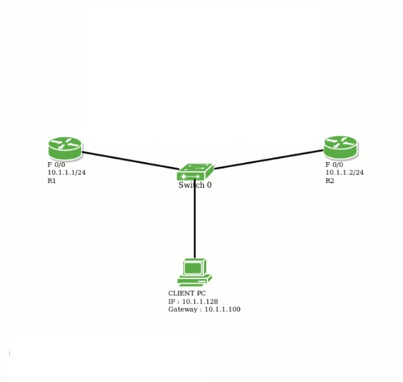

VRRP is an open standard protocol, which is used to provide redundancy in a network. It is a network layer protocol (protocol number-112).
The number of routers (group members) in a group acts as a virtual logical router which will be the default gateway of all the local hosts. If one router goes down, one of the other group members can take place for the responsibilities for forwarding the traffic.
Some important terms related to VRRP :
- virtual IP address : An IP address is assigned as a virtual IP address from the local subnet which is configured as a default gateway for all the local hosts.
- Virtual MAC address : A virtual MAC address is automatically generated by taking the last 8 bytes as the VRRP group number in hexadecimal. In VRRP, Mac address used is 0000.5e00.01xx. Here, xx is the VRRP group number in hexadecimal.
- Master router : One of the VRRP group member is elected as master router which takes up the responsibility of forwarding the local traffic. The router is elected on the basis of priority. If some group member of VRRP group has higher priority than others then it will be elected as master router. If the priority is same(by default 100) then the router having the highest IP address will become the master router.
- Backup routers : Only one of the VRRP group member will become the master router while others will be back up routers. In case the master router fails then one of the backup routers will become master router.
- Master advertisement timer : The master router multicast the keep-alive messages at 224.0.0.18 in every 1 second.
- Master dead timer : The time in which the backup router will take up the responsibilities of Master router if the master advertisement message is not received. It is, by default, 3.69 seconds.
- Prempt : It is a state in which one of the backup routers become the master router (when the master router goes down). Also, when the master router comes up again, it will become the master router as it’s priority is still higher.
- Object tracking : The VRRP object tracking provides a way in which the best router will become the master router. The current master router continuously polls the tracked object state (such as line protocol is up or down). Suppose if the master router line protocol is down then the priority of backup router will be increased dynamically i.e it will become the master router.
- Authentication :
VRRP supports 3 types of authentication –
1. No authentication
2. Plain text authentication
3. MD5 authentication
VRRP rejects packet in any of the following cases :
1. The authentication schemes differ on the routers and the incoming packet.
2. MD5 digest differs on the router and the incoming packet.
3. Text authentication strings are different on the router and the incoming packet.
Configuration :

In above given topology, there are 2-routers named R1 and R2, where R1 fa 0/0 ip address is 10.1.1.1/24 and R2 fa0/0 ip address is 10.1.1.2/24.
Assigning IP address to router R1 :
r1# int fa0/0 r1# ip add 10.1.1.1 255.255.255.0
Assigning IP address to router r2.
r2# int fa0/0 r2# ip address 10.1.1.2 255.255.255.0
Now, let’s provide virtual IP address(10.1.1.100), group name VRRP_TEST, group number 10 and priority 110. Also, here preempt has been enabled by default i.e. if the master router goes down then the backup router automatically becomes the master router.
r1# int fa0/0 r1# vrrp 10 ip 10.1.1.100 r1# vrrp 10 name VRRP_TEST r1# vrrp 10 priority 110
Now, provide virtual IP address(10.1.1.100), group name VRRP_TEST and priority 100. Also, group number 10 is assigned.
r2# int fa0/0 r2# vrrp 10 ip 10.1.1.100 r2# vrrp 10 name VRRP_TEST r2# vrrp 10 priority 100
Note : As provided priority 110 to r1, therefore, it will become the master router.